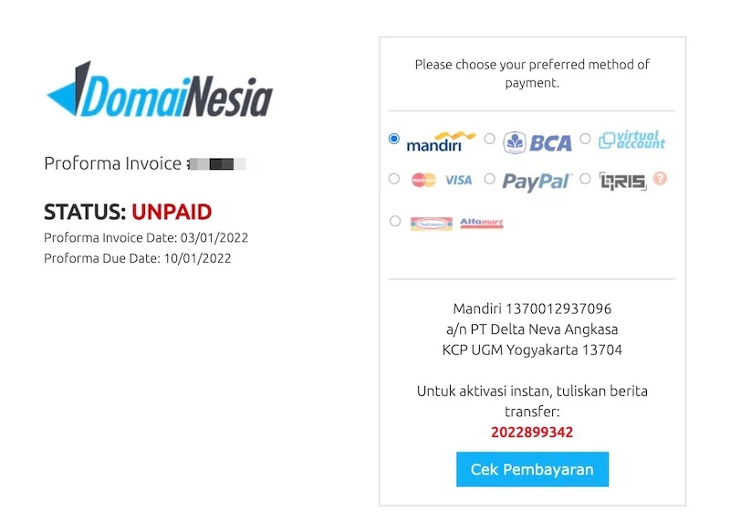

DomaiNesia
- Melalui landing page, ketikkan nama domain yang kita inginkan pada kolom yang tersedia. Atau klik tombol Domain pada bagian atas situs untuk memeriksa ekstensi domain apa saja yang tersedia dan masing-masing harganya.
- Apabila nama domain tersedia, klik tombol "Daftarkan domain".
- Selanjutnya, kita dapat melihat detail domain. Pilih durasi yang diinginkan, centang DNS Zone Manager, dan isi kolom email. Kemudian klik "Masukkan Troli"
- Untuk melanjutkan pembayaran, kita perlu sign in terlebih dahulu dengan menuliskan email dan password kamu pada kolom yang disediakan. Jika belum memiliki akun DomaiNesia, klik "Sign up" dan ikuti langkah-langkahnya.
- Setelah berhasil sign in, lakukan pembayaran dengan klik Selesaikan & Bayar. Kita akan mendapatkan Proforma Invoice atau tagihan pembayaran.
- Proforma Invoice adalah dokumen tagihan sementara dalam transaksi jual-beli. Proforma Invoice akan dikirimkan kepada pembeli sebelum melakukan pembayaran. Biasanya Proforma Invoice berisi informasi mengenai jenis dan jumlah barang atau jasa yang dibeli. Setelah selesai melakukan pembayaran maka kita akan mendapatkan invoice resminya yang menyatakan bahwa pembayaran telah berhasil dilakukan.
- Setelah berhasil melakukan pembayaran, informasi selanjutnya akan didapatkan melalui email.


*Selain domain, DomaiNesia juga menyediakan web hosting, cloud VPS, dan lain-lain. Mekanisme jual beli untuk setiap layanan tersebut kurang lebih sama dengan mekanisme membeli domain yaitu pilih layanan yang diinginkan -> isikan identitas seperti email -> lakukan pembayaran -> selesai.
Referensi: DomaiNesia
Enter Komputer
- Melalui landing page, pilih produk yang kita inginkan dengan memilih kategori produknya, atau dengan memilih dari produk-produk yang terpajang di sepanjang halaman utama.
- Apabila memilih kategori produk, kita kemudian akan dapat memilih produk dari daftar produk yang sudah diseleksi. Dapat dilihat bahwa ada produk yang dapat dibeli melalui platform belanja seperti Tokopedia atau hanya dapat dibeli dengan menghubungi nomor WhatsApp yang tertera.
- Setelah memilih produk, kita dapat langsung melakukan pembelian dengan menekan tombol "Beli Sekarang" atau melalui platform lain yang tersedia seperti Tokopedia. Kita hanya perlu klik ikonnya saja, kemudian akan langsung diantar ke halaman produknya.


*Untuk memudahkan pembeli menemukan komponen komputer yang diinginkan, Enter Komputer menyediakan layanan simulasi rakit komputer. Pada landing page, klik ikon komputer/rakit PC di pojok kanan atas untuk mengakses layanannya.